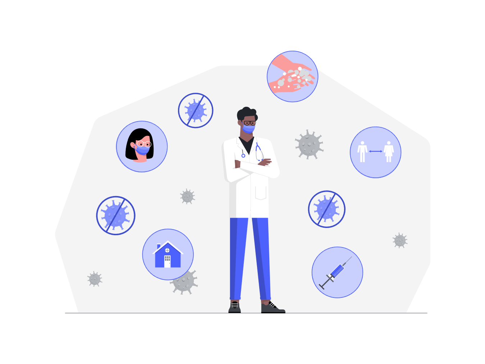

Mencegah penyebaran COVID-19, vaksinasi sekarang juga!
Vaksinasi adalah pemberian Vaksin dalam rangka menimbulkan atau meningkatkan kekebalan seseorang secara aktif terhadap suatu penyakit, sehingga apabila suatu saat terpajan dengan penyakit tersebut tidak akan sakit atau hanya mengalami sakit ringan dan tidak menjadi sumber penularan.

Bagaimana Vaksin bisa bekerja di dalam tubuh untuk melindungi kita?
- Vaksin adalah produk biologi yang diberikan kepada seseorang untuk melindunginya dari penyakit yang melemahkan, bahkan mengancam jiwa.
- Vaksin akan merangsang pembentukan kekebalan terhadap penyakit tertentu pada tubuh seseorang.
- Tubuh akan mengingat virus atau bakteri pembawa penyakit, mengenali dan tahu cara melawannya.